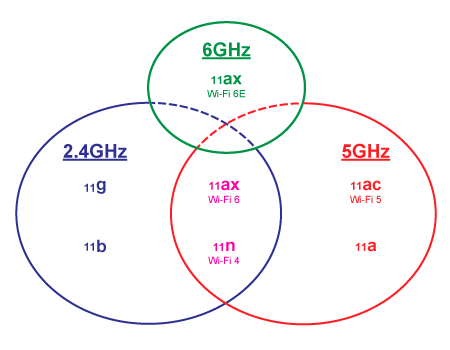

携帯電話以外の無線通話（Wireless Voice
Calls）はたくさん用途があります。例えばホテルのスタッフとフロントの連絡、工場中の点検作業、地域の無線警報などがあります。
リモートアクセスは、VPN（Virtual Private Network）やセキュアリモートデスクトップを指します。テレワークの時代では在宅でも会社のデータやシステムにアクセスするニーズが多いです。

携帯は無線通話できますが、利用料金がかかります。利用料金が掛からない無線通話はたくさん場面に活用できます。
無線電波を使用したトランシーバー、ネットワーク利用した無線放送システムなどがあります。
これトランシーバーセットはVOXハンドフリー機能付き、LED懐中電灯内蔵、オートスキャンチャンネル. 同じチャンネルに設定すると、複数人での通話が可能です、
USB充電機能コスト、環境保護を節約、でき充電機器を見つけるのは簡単です。
デジタル時代の無線放送システムでは、工場、学校、公園などに無線スピーカーを設置し、緊急時や平常時の情報通知に使えます。
無線なので、複雑な配線工事は要らないです。さらに、スマホでも無線スピーカーに音声を流せます。
押すだけで緊急通報できるSOSボタンです。お年寄りや小さい子供に携帯も可能です。緊急時にボタンを押すとアプリに通知されます。
会話もできるので、ご家庭にあると安心です。
毎月の利用料金が掛からない、低コストで家族の安心を実現できます。
無線Wifiは至る所に利用されます。Wifi通信の高速、安定、安全は非常に重要です。
オフィスビル、ホテル、一般家庭にどうやって最適な無線データ通信環境を提供できるか？それは設備と経験が必要です。
弊社は無線通信に知見と経験があり、適切なWifi環境を構築できます。
| 周波数帯 | 特徴 | |
|---|---|---|
| 2.4GHz | メリット | 障害物に強く、天井、床、壁、扉ごしでも電波が届きやすい |
| デメリット | 同じ帯域を利用する機器が多いため、家電製品や近隣の建物などの電波干渉を受け、Wi-Fi接続や通信速度が安定しにくい | |
| 5GHz | メリット | 家電製品や近隣の建物などの電波干渉を受けにくく、Wi-Fi接続や通信速度が安定しやすい |
| デメリット | 天井や壁などの障害物に弱く、離れた部屋には電波が届きにくい | |
| 6GHz | メリット | 帯域幅が広いため、複数の端末を同時接続する場合に、混線しにくく通信が安定しやすい |
| デメリット | 対応する機器が少ない 5GHzよりさらに障害物に弱く、離れた部屋には電波が届きにくい |
|
リモートアクセスとは、ネットワークを利用して遠隔地からコンピューターや社内システムに接続し、操作できる技術です。オフィス以外の場所から社内のPCやシステムにアクセスできるため、テレワークや外出先での業務に活用されます。
テレワークにはリモートアクセスが必須です。リモートアクセスは以下の３つの手段があります。
VPNとは「Virtual Private Network」を省略した略語であり、
「仮想専用通信網」「仮想プライベートネットワーク」とも呼ばれています。
このVPNを利用してインターネットに接続する方式がVPN接続です。
VPN接続では、暗号化された仮想のネットワークを構築することで社外から社内システムにアクセスします。 構築した仮想ネットワークへは特定の人しか接続できないため、盗聴や改ざんといったリスクを軽減できるのがメリットです。
APIとは「Application Programming Interface」を省略した略語で、アプリケーションやソフトウェアを連携させることで機能を拡張させる仕組みのことを指します。
API接続を利用したリモートアクセスは、クラウドサーバー上ですでに公開されているアプリケーションやソフトウェアを利用して社内システムに直接アクセスします。
リモートデスクトップアプリとは、離れた場所にあるPC（ホスト端末）を自分のPCやタブレット、スマホなどのデバイス（クライアント端末）から遠隔操作するためのソフトウェアです。画面をそのまま転送することから、「画面転送方式」とも呼ばれています。
無料で利用できるリモートデスクトップアプリは、個人利用や少人数での利用に適しています。機能が制限されている場合もありますが、基本的なリモートデスクトップ機能は利用可能です。
代表的なアプリとして、導入しやすく、幅広い環境で利用できる「Chromeリモートデスクトップ」やWindows環境での利用に適した「Microsoft
リモートデスクトップ」、また、一定の条件において無料で使える「TeamViewer」「AnyDesk」などが挙げられます。
トラブルシューティングに本格的に遠隔操作したい場合は、無料プランは利用しにくいです。有料ソフトウエアを採用する必要があります。
| 主なアプリ | 特徴 | 料金 |
|---|---|---|
| Chrome リモートデスクトップ | Webブラウザ「Chrome」を利用。アプリのインストールなどは不要でどの端末環境からでも利用できる。 | 無料 |
| Microsoft リモートデスクトップ | Widows OSの標準機能として搭載。ホスト端末がWindowS OSなら、Apple製品からでもアクセス可能。 | 無料 |
| TeamViewer | セキュアなアクセス管理に強み。ビジネス用途では有料だが、個人orトライアルでは無料で利用可能。 | 一定の条件のもと無料 |
| AnyDesk | WindowsとMacだけでなくLinuxにも対応。サーバー環境にもリモートアクセス可能。機能限定の無償版あり。 | 一定の条件のもと無料 |
高いパフォーマンスと操作性を重視したい場合には、 PCでの利用に適したタイプがおすすめです。 これらのアプリは、高画質でスムーズな操作を実現するほか、画面共有やファイル転送などの機能も充実しています。
| 主なアプリ | 特徴 | 料金 |
|---|---|---|
| MagicConnect | クライアント端末はWindows・macOSのほか、iOS・Androidなどモバイルも対応。アプリだけでなくUSB利用も可能。 | 年額18,000円（3台まで） |
| RemoteView | 米国国防省など30万社で導入実績あり。Webブラウザからアクセスするため、インストール作業不要。 | 月額1,100円/台 |
| JumpCloud | Windows、Mac、Linuxなど幅広いOSに対応。PC・タブレット・スマホなどあらゆる端末からアクセス可能。 | 要問い合わせ |
| Splashtop Enterprise | PCやスマホに限らず、キオスクやPoSなどのIoT端末幅まで、広いデバイスで活用できる。 | 要問い合わせ |
| RemoteOperator Helpdesk | Windows、Mac、iOS、Androidの各種OSに対応。有人環境・無人環境どちらでも利用できる。 | 月額1,000円/ID（リモートアクセスライセンスの場合） |